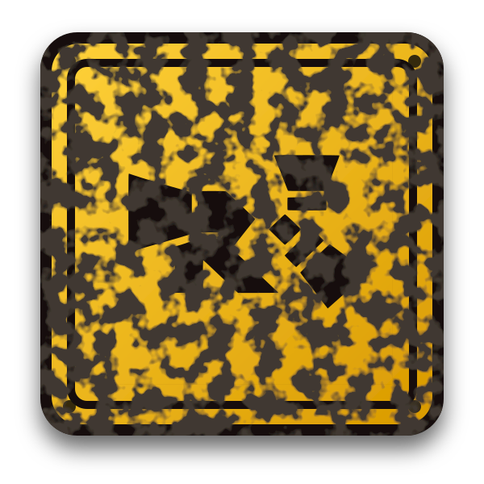

DECAY
Что делает Decay особенной
Каждая механика продумана до мелочей. Здесь нет места случайностям — только твои решения и их последствия.
Выживание
Ограниченные ресурсы, суровые условия и постоянная угроза. Каждое решение имеет значение.
Мультиплеер
Объединяйся с друзьями или вступай в конфликт. Открытый мир, где каждый строит свою историю.
Крафт
Собирай, создавай, улучшай. Глубокая система рецептов и апгрейдов.
Хардкор
Смерть — не конец, но каждый раз всё сложнее. Мир помнит твои ошибки.
Атмосфера
Ржавый индустриальный стиль. Мрачный мир, где важна каждая деталь.
Живая разработка
Лаунчер и обновления доступны всем. Следи за развитием проекта в девлоге и Telegram.
Играй где угодно
Один аккаунт — любые устройства. Прогресс синхронизируется между платформами.
Windows
Windows 10 / 11 · 64-bit
Android
Android 8.0+ · ARM64
Linux
Ubuntu · Arch · Fedora
Три шага до игры
Установка занимает меньше минуты. Дальше всё зависит только от тебя.
Скачай
Нажми «Скачать лаунчер». Файл загрузится напрямую.
Запусти
Открой .exe — лаунчер сам скачает последнюю версию игры и нужные файлы.
Играй
Войди в аккаунт, выбери сервер и окунись в мир Decay.
Частые вопросы
Не нашёл ответ? Напиши в Telegram или оставь отзыв.
Это бесплатно?
Да, лаунчер и игра бесплатны.
На каких устройствах можно играть?
Сейчас — Windows 10/11 (64-bit) и Android 8.0+. Linux в разработке.
Как установить игру?
Скачай лаунчер, запусти его — он сам загрузит игру и все файлы. Подробнее в разделе «Как начать».
Антивирус ругается на .exe. Что делать?
Лаунчер — новый малоизвестный файл, поэтому антивирус может предупреждать. Скачивай его только с этого сайта или из официального Telegram-канала. Если сомневаешься — напиши нам.
Где сообщить об ошибке или предложить идею?
На странице «Отзыв» или в Telegram-канале игры.
Когда выйдет версия для Linux?
Точной даты пока нет. Следи за Roadmap и девлогом.
Готов выжить?
Твой мир Decay ждёт